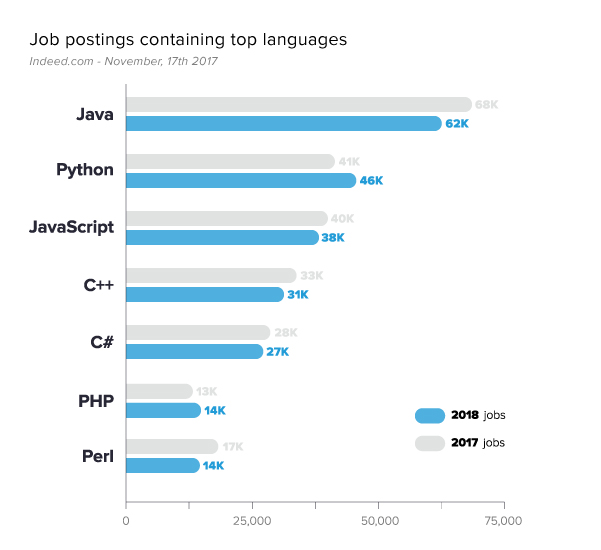

Os alicerces da Web

As páginas da web são estruturadas em HTML, estilizadas em CSS e manipuladas e dinamizadas em JavaScript. Essas três tecnologias são o alicerce dos websites. Além delas existem diversos frameworks criados para facilitar o desenvolvimento e aumentar a produtividade.
A Trindade da Internet
- Hypertext Markup Language
- Mais conhecida como HTML, a Linguagem de Marcação de Hipertexto, em tradução livre, é a
linguagem por trás da estrutura das páginas. O HTML é o esqueleto que sustenta o corpo
do website, a partir dele são aplicadas as estilizações e os scripts.
- Cascading Style Sheets
- Mais conhecido como CSS, é a linguagem de estilização das páginas web. O CSS altera a
apresentação visual do documento e melhora a experiência e a interface do usuário.
- JavaScript
- Abreviado como JS, o JavaScript é a linguagem de programação da web. Ele torna as
páginas dinâmicas por meio dos seus scripts de forma que a página muda de acordo com
os eventos gerados pelas ações do internauta.
Principais Frameworks da Web
- Bootstrap
- jQuery
- React
- AngularJS
- JSON
- AJAX
Linguagens de Programação mais populares

- Java
- Python
- JavaScript
- C++
- C#
- PHP
- Perl
- Ruby
- Dart
- C
"O que é um computador para mim é que é a ferramenta mais notável que já
inventamos. É o equivalente a uma bicicleta para nossas mentes."
Steve Jobs
"O que é um computador para mim é que é a ferramenta mais notável que já inventamos. É o equivalente a uma bicicleta para nossas mentes."
Steve Jobs